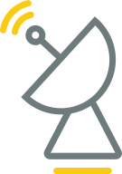

Где нас смотреть?

Интернет и приложения
Ищите нас на мобильных устройствах
скачать приложение
Смотрите вещания в сети Интернет

Спутниковое вещание
Канал:
Спутник:
Частота приема:
Поляризация:
Скорость потока:
Канал:
Спутник:
Частота приема:
Поляризация:
Скорость потока:
Кабельные сети
Телеканал «Надiя» вещает через операторов кабельных сетей. Узнайте, можно ли смотреть нас через кабельных операторов вашего населенного пункта - используйте карту ниже